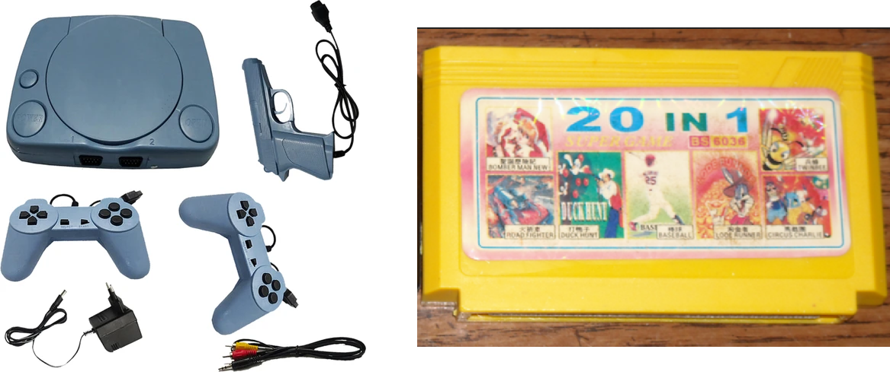
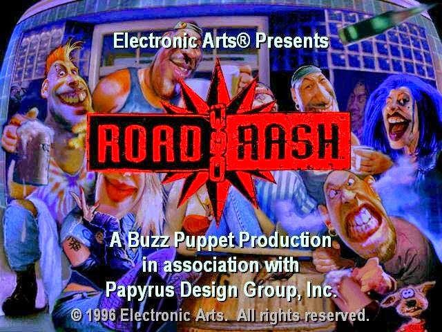
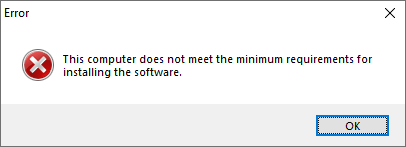
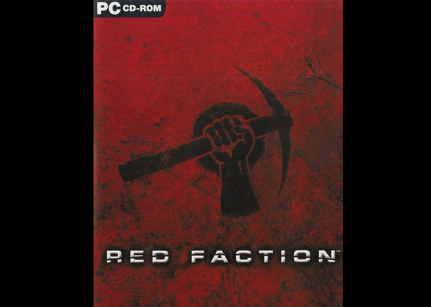
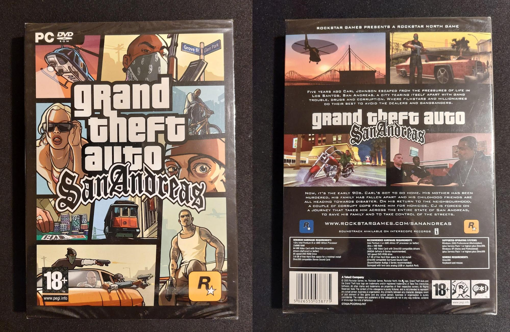
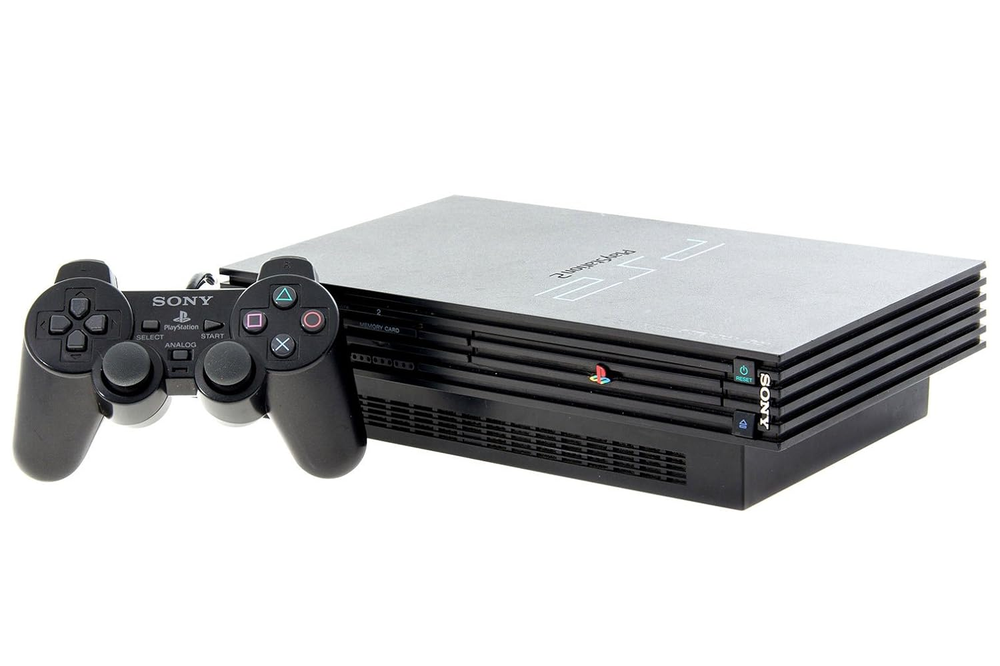

A childhood with video games: how my upbringing created my love for the art form
Why am I writing this?
I am writing this article as a bit of a birthday present for my parents (Hello Ma and Baba), who share the same birth month. They might not consider their facilitation of my love of video games as a noteworthy or significant part of my upbringing, but as an adult, I do think that this is the art form I am closest to, despite growing up with books and music as well. So I wanted to talk about this, almost as a thank you, because if I did not have these extremely strong, core formative experiences, I do not think I would be anything like what I am today. Video games have led me down the path of an interest, and eventually, a career in computer science, and have directly, and indirectly, led to my career, but far more importantly, one of my principal non-career passions and sources of happiness in my life.
My first memory, at five years old

I was thinking for a while about what my earliest memory of a proper video game is, when it suddenly struck me.
When I was around five or six, my parents and I took a trip to a toy shop (I vaguely believe it was called Wonderland) in Calcutta, for my birthday, and we bought something like this. What we now call a Famiclone. A Chinese ripoff of the Nintendo Entertainment System (Nintendo then and now, refuses to sell in India, come on Nintendo.), with a bundle of cartridges for several games, like Super Mario Bros, and vividly, Duck Hunt.
I remember us taking turns playing Duck Hunt with the pistol-shaped controller; we were all horrible at the game and barely got a point to our names, but this is one of my oldest, and strongest memories with video games, and looking back on it, really defined my perception of what it means to have fun with video games. I also remember feeling vaguely good that I was better than the adults at these games, maybe a start to a competitive streak
My first PC
Although neither of my parents worked on the engineering side of computers in their daily lives, they were always very interested in them. I remember we had a computer at home long before most of my friends at school did, and of course, with a computer, came games.
This was an old Intel Celeron computer, horribly slow, and dated even for its time, but I did not care. I could barely clean my teeth with acceptable levels of competence, and I was already gaming.

We always had some "computer guy" or another who would come around to fix the computer whenever something went wrong. And in my toddler brain, they were all interchangeable, and I'll tell you why. These were all different guys at different points in time, but for some reason, they all had very similar names (I remember asking my mum why they all had names like "Prasun" and "Suman", which are various words for "Flower" in Bengali, I unfortunately don't remember the answer that she gave me).
These flowery gentlemen did always repair the computer when something went wrong, but very often, they would install a few games as well, nothing too opulent, simple flash games, like Bowling, and the egg jump game, Amazing Dare Dozen.
I was garbage at these video games. I could barely get a pin down in the Bowling game, and the eggs always felt like they hated me with a very particular viciousness, because no matter what I did, I could never predictably get them into the baskets, and they would always find a way to bounce off the edge. I did not mind though, there was nobody to judge my gameplay ability, and it sure beat looking at screensavers for hours on end.
Road Rash, the inception of the appreciation for the art form

I have a very vivid memory attached to road rash, and I consider it one of my defining memories. It was installed on my computer by one of the flowery repairmen, and although I did try to play it a few times, I lost interest every time I did so.
At one point, I remember I had an extra day off from school, I think it was Good Friday or something of the sort, and my parents had to go run errands on both Friday and Saturday. Out of sheer boredom, I booted up the game, and was immediately struck by the incredible soundtrack that came on. It was not synthesized 8 bit computer sounds, or a series of beeps, but a full Soundgarden song, blaring at me from the tinny speakers. I remember thinking "oh, this is what a full, real video game is like". Nothing held back, a great soundtrack, and a menu that offered me a buffet worth of options of game modes that I could play.
I played nonstop the whole day, and the next, and I could not stop playing. This was the first time that I appreciated a video game as a complete package, and not just as a small toy to have a moment's worth of fun with. I remember thinking at the end of the weekend, damn, I really did spend the whole weekend playing games, but I did not regret it one bit.
Max Payne
On my tenth birthday, a friend from school was invited to my home, and he brought me a video game as a gift: Max Payne.
This was a game with a very clear age rating on the CD: 15.

My father was mortified. This was a game for "mature" human beings, and I was only ten.
He voiced his trepidation about this a few times, but I put the CD in my computer anyway when it was just mum and myself at home.
He need not have worried though, the game threw a big "does not meet the minimum requirements" error at me.

Oh, how I cried and cried. This game looked so cool, and mature, and adult, and serious. And here I was, unable to play the game for reasons outside of my control. How disappointing.
But there was a saving grace. My father had a laptop from work! And it was shiny, and new! Surely it would be able to run the game? But of course, that meant I would have to convince him that the game was suitable for a ten year old to play, which seemed like a herculean trail in itself.
My mum and I pulled off a negotiation worthy of McKinsey, however, and eventually made a deal with him. I would play the game under his supervision for a bit, and if he did not object to what he saw, I would be allowed to play it. We did not know if the game would even run though, so there was that. So I put in the CD (it took a few tries), and waited with bated breath, as my father looked on.
The game ran!
And then, unfortunately, the game started off with the brutal bloody murder of the main character's wife and child.
Oh no.
Despite that initial first impression, the game did get a bit less gory after a while, and I was allowed to play it (phew).
And what a game it was. My first fully 3D game. An atmosphere that felt like a modern version of Frankenstein, a soundtrack better than any movie I had ever seen, voice acting and storytelling that assumed a discerning player with high expectations. And the gameplay. Phenomenal. A vast array of manoeuvres and weapons, multiple high quality levels, and sublime attention to detail.
For the first time, I encountered a game that did not use the excuse of "it is just a video game" to insult me with a subpar story or bad acting. The story was worthy of Poirot, the acting, worthy of Scorsese.
New PC
Around this time, our celeron computer died after several years of exemplary service, and we went to the computer shop to buy another computer, and came back with a Pentium Dual Core Lenovo 3000 H series desktop.
2 cores! I could finally run a few more games on this, and I could even play my old favourite Max Payne with some higher quality settings.

A few months after getting the new PC, my mum and I went to the mall, and there was a video game store. Someone at the store recommended we pick up Red Faction, and he convinced me that I would like it, and thank you video game store man, because I absolutely loved it. We bought it for 299 rupees, and to this day, I think it is the best 299 rupees I have ever spent. It blew my tiny mind, and to this day, I have never encountered a piece of art that quite evokes the feelings that this game did.
It was a bit odd, in hindsight, that I played a game with such obvious communist imagery in the capital of a state that was ravaged by communist party violence, but hey, I was a child, and I cared far more about the destruction physics and variety of gameplay in the game, than I did about anything else.
My teenage years and my reinforcement of tastes.
As I entered my teenage years, I found friends at school who were also deep into PC games, far more so than I was, and they started to introduce me to newer titles. Counter Strike, Half Life, Hitman 2, I devoured every game that they gave me, and was always hungry for more.
Eventually, one of them lended me a copy of Grand Theft Auto San Andreas to try for a week.

This was a game that had a big scary "18+" on the cover. And this time I was thirteen. Once again, five years short. I asked my mum if she would buy me a copy, and to her credit, she never really did care about age ratings, believing them to be for the "general, immature" audience, and she trusted me to be able to handle the mature parts of the game.
So we went to the shop again. There was one copy available, for 499 rupees, and we bought it, with a 500 rupee note. In hindsight, I sometimes look at a 500 rupee note in my wallet, and I wonder if any such note will ever be as worthwhile as that one.
Because, oh, how I played that game.
Grand Theft Auto San Andreas had the single largest impact on me that any piece of media has had, before, or since. The soundtrack influenced my music choices for the rest of my life, introducing me to a vast variety of hip hop and classic rock, and to this day, it features in my listening habits with surprising regularity.
It reinforced in my head the idea that games should be large, vast sandboxes that should let players do everything that they might think of doing, while at the same time having great stories and voice acting.
GTA San Andreas is an incredible representation of American culture, while being a harrowing commentary on gangland violence and drug related criminality, but it does such a good job of reinforcing that the characters are doing fundamentally bad things, and are not worthy of glorification, that I think my mum was very right to let me play the game when I did.
The Playstation 2: my foray into console gaming

In my teenage years, the Playstation 3 and the Xbox 360 were in full force, selling like plum cakes on Christmas Eve. My parents used to often visit electronics shops in the mall to be indecisive about purchasing food processors and the like, and it offered me the opportunity to play around with the consoles there. Wherever I found an Xbox 360 on trial, (I remember a Mumbai E-Zone very fondly for this), I seized it, playing Need for Speed games on it while my parents walked around the mall. Eventually, I did muster up the courage to ask my parents for a console, and while we could not afford the Playstation 3, or the XBox 360, there were still older units of the Playstation 2 available for sale at a heavy discount, and my parents bought me one for a princely sum of 5990 rupees, along with a few racing games. While this did not play as big of a role in my video game journey as something like Max Payne or San Andreas, I still remember fondly the many afternoons I spent in racing games, and I like to think that it did play a big role in me finding a passion for motorcycle track racing as an adult.
The present day - a conclusion of sorts
Video games, books, and music are the main art forms that I consume, and they all influence each other. I like my video games to have stories as good as those in my books, and my taste in music is affected by the video games that I play. I am not a TV person, I am too hyperactive to watch several episodes or seasons of a TV show, unless it is in the background of some other activity. Movies are fine, but they have always been a few-times-a-year thing for me rather than something I consume regularly.
Singleplayer, story based videogames that need my full attention, have been with me as my main source of entertainment throughout my life, through highs and lows. As I went through college, and then when I could finally purchase games, the tastes I built up as a child have persisted, and my childhood memories involving video games have remained some of my fondest. If I did not receive the exposure to video games that I did when I was little, and the opportunity to play them, my tastes, and indeed, my quality of life today, would have been vastly different. I was reminiscing about this recently, and I wanted to write my thoughts down, so I could appreciate my mother's disdain for age limits, and my father's initial resistance, but then always eventual acquiescence, whenever I asked for a game.